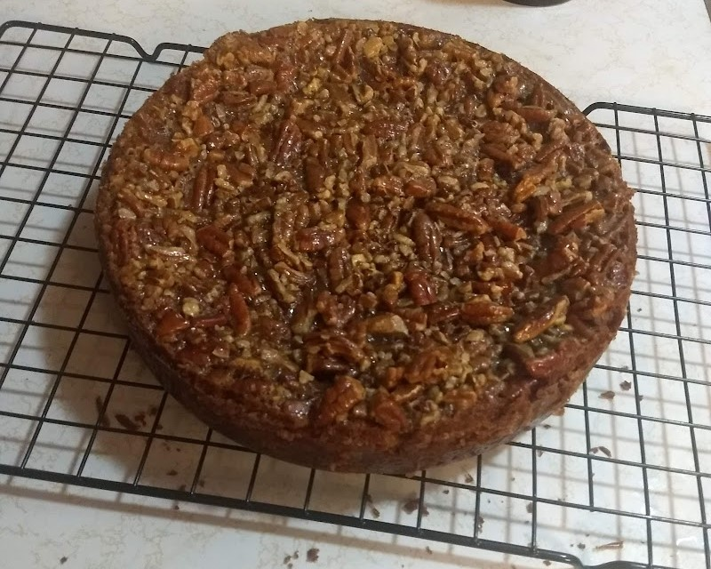

One of my favorite hobbies is crocheting. I have been crocheting for around 2 years now. I enjoy making clothing, stuffed animals, and many other wonderful crafts for friends and family. I taught myself how to crochet by watching YouTube videos and following along. Before long I was hooked (pun intended), and now I have an entire closet full of different yarns.
Another hobby I thoroughly enjoy is baking. My favorite thing to bake is a pecan pie cheesecake. It’s always a hit at family dinners, and I usually have to make two. I especially enjoy baking with my kids. They have so much fun and I get to teach them the way my great grandma taught me.

My longest standing hobby has been reading. From a very young age I started reading books like Harry Potter, Artemis Fowl, and Goosebumps. It wasn’t long before I was diving head first into the realm of Fantasy and Science Fiction. Growing up it was uncommon to see me with less than two or three books in my back pack.